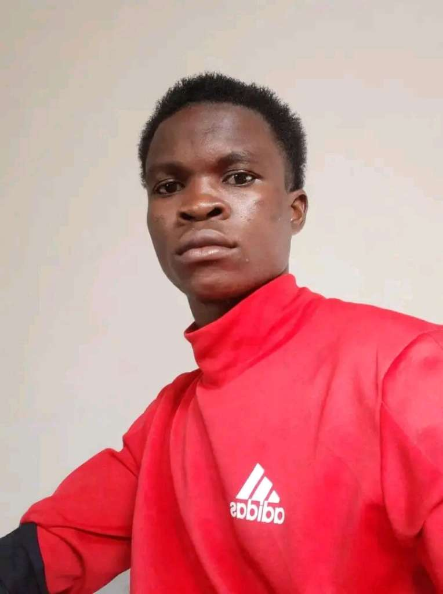
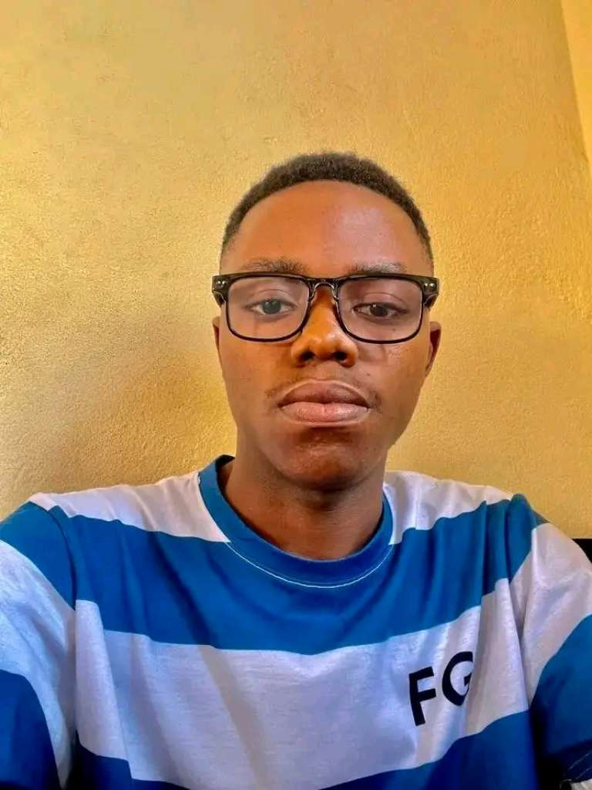

VICE-ADMINISTRATEUR
Vice-administrateur de DO7U
Il accompagne l’administration et contribue à la coordination des activités de la communauté.
DO7U rassemble des personnes qui partagent leurs idées, développent des projets et construisent un avenir meilleur grâce à l'engagement collectif.
DO7U est un espace de rencontre, de collaboration et de progression collective.
Nous croyons en la force du partage, de la solidarité et de l'engagement. Chaque membre peut contribuer, proposer, apprendre et participer à la construction de nos initiatives.
Participer à la communauté →DO7U commence avec des personnes qui choisissent de partager leurs idées, de s'entraider et de construire quelque chose de positif. Voici deux visages engagés dans cette aventure collective.

Il accompagne l’administration et contribue à la coordination des activités de la communauté.

Il conçoit et développe la plateforme, écrit le code et met en place les fonctionnalités qui permettent à la communauté de fonctionner.
Nous avançons avec un esprit d'équipe et une volonté de construire ensemble.
Chaque idée compte. Chaque effort peut faire une différence.
Nous encourageons la créativité, l'initiative et les solutions nouvelles.
Nous nous soutenons et partageons les opportunités de progresser.
Retrouvez les prochaines réunions, confirmez votre présence et prenez part aux décisions du groupe.
Accéder aux réunions ↗Chargement des prochaines réunions…
Connectez-vous à l'espace membre pour échanger, réagir aux annonces et participer aux activités de DO7U.
Entrer dans DO7U ↗